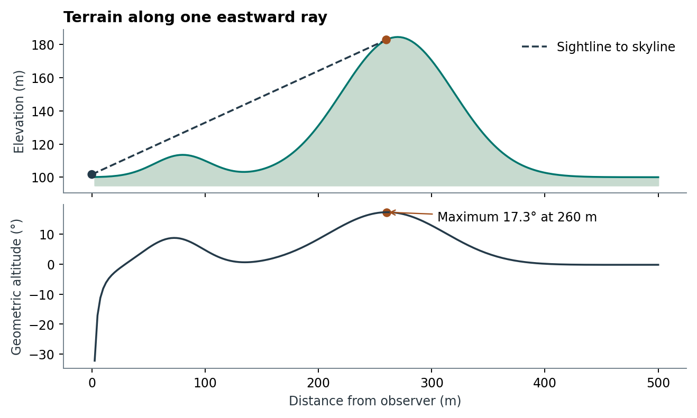
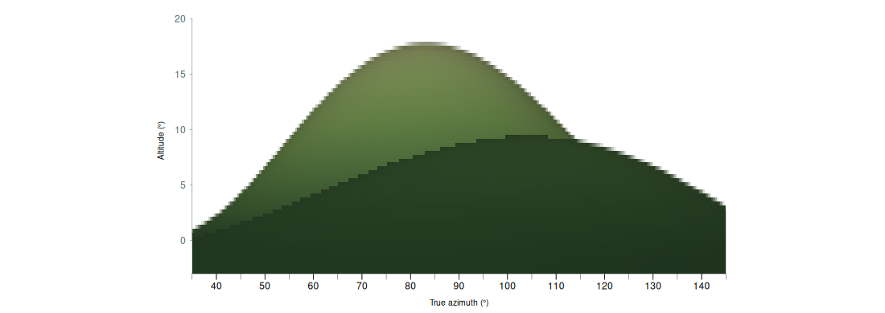

5 Constructing a site horizon
Function createHor() · Package skyscapeR 2.0.9004
A skyline is the altitude of the obstruction at each bearing from a particular viewpoint. createHor() builds this profile from observations or predicts it from a digital elevation model (DEM). Both routes return the same kind of horizon object. The evidence between adjacent bearings is quite different.
5.1 From field measurements
Supply the measured bearings and altitudes in degrees, with the observer’s latitude, longitude and elevation. The constructor repeats the measurements on either side of north, removes duplicate bearings and linearly interpolates both altitude and the supplied altitude uncertainty. This gives a continuous profile across north on a 0.01° grid. The grid is convenient for evaluating a sightline at any bearing. A narrow notch between two measurements can still be absent from the result.
For example, two measured points of equal altitude on opposite sides of a notch produce a level interpolated skyline between them. Record a foresight at the bottom of the notch if that feature matters to the interpretation. Repeated readings at the same bearing should be reduced to an estimate and uncertainty before calling the constructor. Optional smoothing averages over neighbouring samples and can lower a peak or fill a notch. With the default smoothing width of 1,000 samples, the window spans about 10°. Smoothing is off by default.
5.2 From an elevation model
- Place the observer. The function samples the ground height at the site unless an elevation is supplied explicitly, then adds
eye.height. Supply numeric latitude and longitude in that order for the default WGS84 route. Whenloc.crsis explicit, coordinates are in x, y order. A point object with its own coordinate reference system removes that ordering ambiguity. Ground height and DEM elevations must use compatible vertical datums. - Trace rays. A local azimuthal equidistant projection supplies distances and bearings clockwise from true north. Along each ray the function samples the source raster by bilinear interpolation, calculates the elevation angle to each terrain sample and keeps the maximum. A more distant ridge may set the horizon even if the near terrain rises steeply.
- Correct the terrain angle. The default combines Earth curvature and terrestrial refraction using the pressure, temperature and vertical temperature gradient in Patat’s approximation (Patat 2011, eqs. 1–2). With an explicit
refraction.k, the calculation uses an effective Earth radius. Zero retains geometric curvature. Withcurvature = FALSE, it uses the uncorrected height difference and distance. Refraction along a terrain sightline is a separate choice from astronomical refraction applied later to a star or the Sun. - Retain the profile and its provenance. Record the elevation product and date, horizontal and vertical reference systems, observer position and height, sampling settings, coverage and any reconstructed features. The optional panorama has its own sampling and lighting. Changing its pixel width cannot recover a ridge missed by the numerical rays.
5.2.1 Which point supplies the skyline?
For an observer at elevation (including eye height), the solver maximises the apparent terrain angle over finite samples along each ray. In the default Patat branch, with ground elevation , horizontal distance , and local Earth radius , the candidate angle in radians is
Here is pressure in mbar, is temperature in °C, and is the vertical temperature gradient in °C/km. The retained altitude is . A lower but nearer ridge can therefore conceal higher ground beyond it. This is the terrestrial light path from terrain to observer. Atmospheric refraction applied subsequently to a celestial position is a separate calculation (Patat 2011). With a supplied constant refraction coefficient , the code instead uses the spherical geometry of an effective radius metres. With curvature disabled it uses .

For search distance and requested radial step , the ordinary numerical rays use samples at . The default is half the smaller local raster-cell dimension. The base bearing grid similarly uses equally spaced rays, supplemented for reconstructed features. Bilinear sampling can smooth a narrow crest. A denser output grid cannot recover a crest absent from the terrain data. If the ray has missing coverage, its largest available angle can underestimate the skyline. The source metadata records incomplete bearings. When examining a disputed foresight, inspect that bearing and the winning ridge distance before pooling errors across a station. H01 gives per-station errors and compares DEMs over common bearings in Ireland.
5.3 Generating a terrain panorama
The DEM route through createHor() produces two outputs: the numerical skyline in h$data and a shaded image of the terrain visible below it. A measured series of azimuths and altitudes supplies no distances, slopes or intervening surfaces from which to render that foreground. To make a panorama, supply a single-band DEM with elevations in metres, observer coordinates in the specified reference system, and an output directory. The R packages terra and png are required for this example.
library(skyscapeR)
library(terra)
dem <- rast(xmin=499450, xmax=500550, ymin=5699450, ymax=5700550,
resolution=5, crs="EPSG:32630")
xy <- xyFromCell(dem, seq_len(ncell(dem)))
east <- xy[, 1] - 500000
north <- xy[, 2] - 5700000
values(dem) <- 100 + 15 * exp(-((east-80)/35)^2 - ((north+30)/90)^2) +
88 * exp(-((east-270)/70)^2 - ((north-40)/200)^2)
h <- createHor(dem=dem, loc=c(500000, 5700000), loc.crs="EPSG:32630",
name="Two ridges", eye.height=1.6, max.distance=500,
az.step=1, distance.step=2.5, panorama=TRUE, width=1024,
image.dir="terrain-images", ncores=1)
stopifnot(file.exists(h$metadata$image$path))
plot(h, xrange=c(35,145), yrange=c(-3,21), use.image=TRUE)For a survey, replace the synthetic surface with rast("survey-dtm.tif"), enter the actual observer coordinates and choose a search radius that includes any distant ridge liable to form the skyline. The DEM should cover that search area. Supply the dataset credit and terms using attribution and license. If working from a photograph with a sky mask, use the photographic calibration chapter.

5.3.1 From terrain rays to image pixels
The output is a 2:1 equirectangular RGBA PNG covering 0–360° clockwise from north and −90° to +90° altitude. Column centres are displaced half a pixel from the north seam. The renderer interpolates the numerical skyline to each column to fix the upper edge and leaves sky pixels transparent. Along each column it traces near to far, tracking the greatest elevation angle encountered. For a row below the skyline, the first terrain segment that reaches its viewing angle supplies the visible surface. More distant terrain below that line is hidden. The renderer interpolates surface properties between samples. A reconstructed horFeature() can change the foreground colours or relief even when a distant ridge still determines the upper edge.
| Setting | What changes |
|---|---|
az.step, distance.step, max.distance |
The bearings, radial sampling and outer limit used to calculate the numerical skyline. The outer limit also bounds the rendered terrain. |
width |
The number of panorama columns. Height is half the width. The default 4096 × 2048 has an angular pixel width of about 5.27 arcminutes. |
panorama.distance.step, panorama.acuity |
The radial spacing for the image. With the default adaptive rule, the effective angle is the larger of one PNG pixel and the requested acuity (default one arcminute). At distance , the proposed step is the larger of the near step (normally one local DEM cell) and , with the effective angle. A narrow ridge can fall between samples. Supply a fixed step in metres to check a critical feature, or NULL to reuse the numerical ray spacing. |
terrain.palette, land_cols, sea_cols, sea_level |
Colour the surface by elevation. Inspect the available ramps with demPalettes(). A sea-level threshold can colour low-lying dry ground as water. Use sea_level=NULL where that interpretation is inappropriate. |
lighting, light.azimuth, light.altitude, ambient, haze |
Relief mode blends observer-facing and directional illumination. Directional mode uses the selected light direction. The hillshade has no cast shadows. For an inspection of the palette alone, set ambient=1, haze=0. The default illumination is illustrative and does not reconstruct illumination at a dated solar event. |
The example wrote a 1024 × 512 PNG. Its adaptive grid used 100 radial samples, with an effective angular target of 21.09 arcminutes. Inspect h$metadata$image$sampling for the values used on another DEM. Increasing image width alone leaves the numerical bearing grid unchanged. When a narrow bank or notch matters, check both grids.
5.3.2 Keeping and reusing the image
panorama=TRUE is the DEM default. image.dir defaults to the working directory, and h$metadata$image$path identifies the actual file. An image-rendering failure can return a valid numerical horizon with a warning and no image metadata. Save the PNG alongside saveRDS(h, "two-ridges.rds"); the RDS stores its path and checksum. After moving the files, assign the result of relinkHor(). plot.skyscapeR.horizon() displays the terrain, sketchSky() places a sky above it, and exportStellarium() packages it for Stellarium. The interchange section describes that export.
Download the runnable example, full-sphere PNG, eastern view and run log. The terrain is synthetic and illustrates rendering and occlusion. The field comparisons in the study register evaluate skyline altitudes.
5.4 Reconstructing features on a DEM
A bank can be visible from a monument without forming its skyline. To distinguish those possibilities, pass a horFeature() object, or an ordered list of them, in the features argument to createHor(). This route requires a DEM. A profile supplied as measured bearing–altitude pairs contains no terrain distances at which to place the earthwork.
5.4.1 Footprint, height and viewpoint
Supply vector geometry with a known coordinate reference system. Dimensions are in metres. A point stone or pole uses a circular footprint of the given diameter. A line becomes a strip of the specified total width, centred on the line. For a polygon, banks, ditches and walls follow the boundary by default; stones, poles, mounds and platforms occupy the area. Use use = "area" or "boundary" explicitly when the distinction matters. Interior rings are respected, including their edges in boundary mode.
At each sample the reconstruction modifies the local DEM elevation. A bank adds height, a ditch subtracts depth, and a zero-height feature can colour a visible surface without raising it. If the DEM already contains 0.6 m of surviving bank and the hypothesis is a 1.5 m crest above the adjacent ground, the additional height at that crest is 0.9 m. Adding the full 1.5 m there would count the surviving relief twice. The viewpoint stays at its original elevation. To place the observer on a reconstructed platform, supply its hypothesised top elevation as the observer’s ground elevation, then add eye height.
Banks, ditches and mounds default to a rounded profile. The displacement rises from zero at the edge according to , where is the inward distance expressed as a fraction of the profile radius. For a line this radius is half its width. Stones, poles, platforms and walls default to a flat profile that follows the underlying terrain. Where features overlap, the greatest positive displacement and the deepest negative displacement are added. Two overlapping banks therefore contribute the taller bank at each sample. Later layers, and later rows within a layer, take colour precedence. This representation supports terrain-attached relief; a doorway through a bank requires a gap in its footprint.
5.4.2 From feature to skyline
The numerical calculation adds bearings at the edges and centre of raised or cut features and samples where rays intersect their footprints. It evaluates the modified surface against all other terrain along the same ray. A bank changes the skyline only where it exceeds the previous maximum elevation angle. A ditch can lower the skyline only where it cuts the terrain that previously set that maximum. A foreground feature below a distant ridge can therefore alter the panorama while leaving the skyline altitude effectively unchanged.
Panorama columns trace the reconstructed surface independently. Colour is subject to visibility, shading and haze. A narrow feature can fall between columns even when the numerical rays detect it. Refine az.step and distance.step for a critical bearing and increase PNG width to check the depiction. The returned numerical profile is interpolated to the usual 0.01° grid.
5.4.3 Example: a 1.5 m bank across a sightline
This illustrative terrain is level at 100 m. A bank 100 m east of the observer crosses the due-east ray. The crest is 1.5 m above ground and the eye is 1 m above ground. With curvature disabled, the line to the crest has an altitude of approximately . The returned skyline uses the maximum along the rounded bank, which can occur slightly nearer than its centre.
dem <- terra::rast(xmin = 499500, xmax = 500500, ymin = 5699500,
ymax = 5700500, resolution = 5, crs = "EPSG:32630")
terra::values(dem) <- 100
axis <- terra::vect("LINESTRING (500100 5699950, 500100 5700050)",
crs = "EPSG:32630")
bank <- horFeature(axis, "bank", width = 6, height = 1.5, colour = "ivory")
settings <- list(dem = dem, loc = c(500000, 5700000), loc.crs = "EPSG:32630",
eye.height = 1, max.distance = 400, curvature = FALSE,
panorama = FALSE, ncores = 1, verbose = FALSE)
bare <- do.call(createHor, settings)
raised <- do.call(createHor, c(settings, list(features = bank)))
vapply(list(bare = bare, raised = raised), function(h) {
approx(h$data$az, h$data$alt, xout = 90)$y
}, numeric(1))To model a chalk-coloured cursus enclosure, a zero-height polygon in area mode can supply the interior colour, with a raised boundary bank later in the list. This lets the interior and bank have different colours while only the bank adds relief. Save the feature objects with the DEM provenance, viewpoint and settings. The returned metadata$features summarises the layers and records checksums; rebuilding the geometry requires the saved features. Save the external PNG as well when a panorama was requested.
The rules above follow the 2.0.9004 implementation in R/horizon-features.R and R/dem-horizon.R. The example illustrates the geometry of an assumed bank. H01 tests terrain skylines. Reconstructed earthworks need independent measurements of their geometry.
5.5 Choices that affect a sightline
| Choice | Practical consequence |
|---|---|
| Viewpoint and terrain source | A small shift on a barrow can change the nearest obstruction. A bare-earth DTM omits trees and buildings that may appear in a survey. An assumed instrument height introduces a station-specific uncertainty. |
| Search radius and coverage | The default radius is 10 km. Terrain beyond it cannot contribute. Missing raster samples can leave a ray incomplete. Inspect incomplete.bearings and repeat with a wider radius where distant ground is plausible. |
| Angular and radial sampling | The default angular interval is 0.25°, about 22 m between adjacent rays at 5 km. Along a ray, the default step is half the smaller estimated local cell dimension. Refine the two independently when a narrow feature determines a result. |
| Altitude uncertainty | alt.unc carries the uncertainty supplied by the analyst. The default 0.5° is an input assumption. Assign a value appropriate to the survey or error evidence available for the site. |
5.6 Changes and evidence
The 2.0 development documentation records the DEM construction route, terrestrial refraction and external terrain panorama. An existing horizon interpolated from a survey and a new one derived from a DTM can differ even at the same nominal location. Record which route supplied the profile in a published analysis.
The H01 field comparison quantifies error at surveyed bearings. H02 compares independently computed profiles at matched viewpoints. The English controls hold the terrain product, observer setup and search radius fixed. Delivered online profiles can also differ in their input terrain and effective observer height.
5.7 Full package help
Read the complete createHor() help page
Construct a site horizon from measurements or an elevation model
Description
Build a continuous horizon profile from measurements of horizon altitude at known bearings around a site, or predict the horizon and visible terrain from a DEM.
Usage
createHor(
az,
alt,
loc,
dem = NULL,
loc.crs = NULL,
name = "",
alt.unc = 0.5,
smooth = F,
.scale = 1000,
eye.height = 1.6,
max.distance = 10000,
az.step = 0.25,
distance.step = NULL,
features = NULL,
curvature = TRUE,
refraction.k = NULL,
atm = skyscapeR.env$atm,
temp = skyscapeR.env$temp,
tempgrad = -10,
panorama = TRUE,
width = 4096,
panorama.distance.step = "adaptive",
panorama.acuity = 1,
terrain.palette = "temperate",
land_cols = NULL,
sea_cols = NULL,
sea_level = 0,
n_sea = 3L,
palette_n = 256L,
lighting = c("relief", "directional"),
light.azimuth = 315,
light.altitude = 45,
ambient = 0.38,
haze = 0.65,
image.dir = getwd(),
attribution = "User-supplied DEM",
license = "See source DEM terms",
ncores = NULL,
verbose = TRUE,
progress = interactive() && verbose
)
Arguments
az |
Array of azimuth values |
alt |
Array of altitude values. |
loc |
Observer location. For DEMs, pass a single CRS-bearing terra SpatVector point directly as loc, or a numeric latitude and longitude. Ground elevation is read from the DEM unless supplied as a third numeric value. Measured horizons take latitude, longitude and elevation. |
dem |
Optional single-band terra SpatRaster or local raster filename. Supply dem in place of az and alt. Requires the optional terra package. |
loc.crs |
CRS for numeric DEM observer coordinates in x,y order (easting, northing or longitude, latitude). Without it, numeric loc uses latitude, longitude in WGS84. A single terra SpatVector point carries its own CRS. An optional third numeric coordinate is ground elevation in metres. |
name |
Name of site. |
alt.unc |
Either a single value or an array of altitude uncertainty. |
smooth |
Logical to control whether to smooth horizon profile using rolling mean. Defaults to FALSE |
.scale |
Number of samples in the rolling mean when smooth = TRUE. The grid spacing is 0.01 degrees, so 1000 samples span approximately 10 degrees. |
eye.height |
Observer height above the selected ground elevation in metres. |
max.distance |
DEM search radius in metres, default 10000. Include any distant terrain that could form the horizon within the DEM coverage. |
az.step |
Maximum spacing of numerical DEM rays in degrees. The default is 0.25. An equal number of steps fills the circle. |
distance.step |
Maximum spacing of samples along each ray in metres. By default use half the smaller native cell dimension estimated at the site. |
features |
Optional |
curvature |
Apply Earth curvature to DEM sightlines. Default TRUE. |
refraction.k |
Default NULL applies Patat when curvature is enabled. Set zero for geometric curvature without terrestrial refraction, or supply a coefficient below one for the effective-radius model. |
atm |
Ground atmospheric pressure in millibars for Patat terrestrial refraction. |
temp |
Ground air temperature in degrees Celsius. |
tempgrad |
Vertical temperature gradient in kelvins per kilometre (default -10). |
panorama |
Render an external terrain PNG for a DEM. Default TRUE. Set FALSE for the numerical horizon alone. |
width |
DEM panorama width in pixels, an even integer from 32 to 81920. Default 4096 by 2048 pixels. Height is half the width. Widths above 8192 are assembled from temporary image tiles. Both dimensions grow with width, so a tenfold increase generates 100 times as many pixels. |
panorama.distance.step |
The default, "adaptive", starts at one local DEM cell and increases radial spacing with distance using the larger of the requested angular acuity and one horizontal PNG pixel. This transverse footprint is a proxy for radial detail. A narrow ridge may fall between samples. Use a positive number for fixed spacing in metres or NULL to reuse distance.step. The numerical horizon uses distance.step independently. Inspect metadata$image$sampling for the effective angle, sample count and actual step range. On large DEM-only panoramas, the renderer checks near terrain against a conservative upper bound for the remaining terrain on each ray. It skips distant samples only where all remaining elevations are hidden and keeps neighbours for surface shading. Terrain with added archaeological features uses the full sampling path. |
panorama.acuity |
Angular detail target in arcminutes for adaptive PNG sampling. Defaults to 1 (nominal 20/20 acuity). Larger values coarsen distant terrain. |
terrain.palette |
Named land/water pair from |
land_cols, sea_cols |
Opaque R colour names or hex colours in increasing elevation order. NULL inherits the respective ramp from terrain.palette. Supply either vector to override just that ramp. One colour gives a uniform base. Colours interpolate in Lab space. |
sea_level |
DEM elevation in metres at or below which the sea colour ramp is used. Default 0. A level water surface uses the shallow colour. This is an elevation threshold. Use NULL to apply the land palette over the whole visible elevation range, including depressions. The temperate land ramp starts at the lowest visible land level or sea threshold, whichever is higher. Other palettes with a threshold start at sea_level. The ramp ends at the highest visible elevation. The sea ramp starts at the lowest visible elevation. |
n_sea |
Number of entries reserved for the sea ramp, leaving at least two land colours. Default 3. |
palette_n |
Total number of palette entries, from 4 to 65536. Default 256. |
lighting |
Relief lighting (default) blends a light at the observer (75 percent) with the directional source (25 percent). It shades both sides of a slope and lifts deep shadows. Choose "directional" for one-sided hillshade. Lighting affects the PNG only. |
light.azimuth, light.altitude |
Direction towards the illustrative light source in degrees clockwise from true north and above the horizon. Defaults are 315 and 45 degrees. Hillshading uses upward surface normals in metric east, north and vertical coordinates. This is local illumination without cast shadows from other terrain. |
ambient |
Fraction of illumination retained on slopes facing away from the light (0 to 1). Default 0.38. Use 1 for unshaded palette colours. |
haze |
Maximum fraction of distance haze (0 to 1). Default 0.65. Set haze=0 and ambient=1 to inspect the colour mapping alone. |
image.dir |
Directory for the DEM PNG. Defaults to the working directory. Site names form the filename; different images with the same name receive a checksum suffix. |
attribution |
Credit for the DEM, included in plots and exports. The generic default credit is omitted from plots. |
license |
Source licence or terms for the DEM, included in exports. |
ncores |
Maximum DEM tracing workers. Defaults to half the available logical cores, rounded down with a minimum of one. The startup message reports used and available cores. Workers share file-backed DEM data and process separate bearings. |
verbose |
Announce the DEM radius, sampling and rendering stages. |
progress |
Show a progress bar for each tracing stage. Default on in interactive verbose sessions. |
Details
Measured bearings. To evaluate sightlines between measured bearings, the constructor repeats the azimuths one turn in each direction, removes duplicate azimuth entries and linearly interpolates altitude and altitude uncertainty onto a 0.01-degree grid from -90 to 450 degrees. Scalar uncertainty is repeated. Optional smoothing applies a running mean over the specified number of grid samples to both series, with zero fill at the outer ends. Latitude, longitude and elevation identify the observer; omitted elevation defaults to zero. Interpolation cannot recover narrow features between measurements.
Observer and DEM coverage. For a DEM, supply a point with a CRS, projected x and y with loc.crs, or WGS84 latitude and longitude. The optional third coordinate is ground elevation in metres in the DEM's vertical datum. Otherwise ground elevation is bilinearly sampled at the site. Observer elevation in the returned georeference is ground elevation plus eye.height. A terrain model represents bare earth. A surface model includes the objects represented in its elevations. Use a single continuous band in metres with a defined horizontal CRS. Missing samples and terrain beyond the raster edge are skipped. A warning and the incomplete.bearings metadata identify incomplete coverage. Each bearing needs at least one usable sample.
Sampling narrow ridges. Terrain is sampled along true bearings from north, clockwise. A WGS84 local azimuthal equidistant projection sets the distances and bearings. Sample coordinates are transformed to the source grid for bilinear elevation extraction in batches. Each horizon angle is the maximum sampled elevation angle along its ray. The requested radius is included wherever covered. A missing observer ground elevation without an override or an observer outside the DEM cause an error. Rays and distance samples are discrete. A finer constructor output grid cannot recover a ridge between rays, steps or DEM cells. Increase the radius and refine both sampling intervals to check convergence for a site. At 5 km the default 0.25-degree rays are approximately 22 metres apart. The supplied altitude uncertainty is an assumption in degrees.
Curvature and terrestrial refraction. By default the apparent altitude at each sampled distance d (metres) follows Patat (2011), equations 1 and 2. The geometric angle is atan((z-observer)/d - d/(2R)). Add (d/R) times 0.252 P (34.2 + tempgrad) / T squared in radians, using temperature T in kelvins and the latitude-dependent radius R from Appendix A1. The same corrected angles determine the numerical horizon and the visible terrain in the PNG. An explicit numeric refraction.k selects a spherical vertical section of effective radius 6371008.8 / (1 - refraction.k) metres. At ground distance d and elevation z, the forward component is (R + z) sin(d/R) and the vertical component is z minus observer elevation minus 2 (R + z) sin(d/(2R)) squared, where the square applies to the sine. The angle is obtained with atan2. With curvature disabled, use the height difference and horizontal distance directly. Terrestrial refraction applies to the terrain sightline. Atmospheric refraction is controlled separately in astronomical calls.
Panorama and reconstructed features. By default a second set of rays paints the first visible terrain at each
azimuth and elevation, using local surface normals, elevation colours and
distance haze. The transparent sky edge follows the numerical horizon.
With features, each PNG column is traced directly through the reconstructed
terrain; its edge can differ from the interpolated numerical horizon between
rays. Refine az.step and width when examining narrow structures.
The panorama spans the full 360 degrees from nadir to zenith. The horizon object
stores its bounds, checksum, attribution and licence in metadata$image.
Save the external PNG alongside the RDS. If you move them, use relinkHor
to reconnect the image. A rendering failure returns the numerical horizon with a warning.
Plotting also falls back to the numerical horizon if the image is missing or has changed.
Value
A skyscapeR.horizon list with metadata (site name and georeference) and a data frame named data. Its az, alt and alt.unc columns contain azimuth, horizon altitude and altitude uncertainty, all in degrees.
Accuracy, uncertainty and reproducibility
H01 compared 334 bearings at 31 observing setups.
At the surveyed bearings, createHor() reproduced the observed terrain skyline to within half a degree in 91.9% of cases.
See the H01 field validation in the skyscapeR technical manual for the survey protocol, station results and limitations.
With the same 1 m terrain, createHor() reproduced Horizon’s skylines to a mean absolute difference of 0.004 degrees at each of two English sites. Against field measurements at 344 Irish bearings, createHor() using SRTM had a mean absolute error of 0.328 degrees, lower than either HeyWhatsThat or PeakFinder on that sample. Field accuracy varied by site. See the H02 comparison in the skyscapeR technical manual.
The numerical skyline is a maximum over sampled terrain, not an accuracy certificate for the DEM. Horizontal and vertical datum differences, observer height, missing raster values, vegetation and buildings can exceed the sampling error. DEM elevations and a supplied observer ground elevation must use a compatible vertical datum. No geoid conversion or vertical-datum correction is performed automatically. Refine the angular and distance sampling and expand the radius until the relevant sightlines are stable. Compare with surveyed bearings and altitudes where available.
alt.unc is supplied by the user and is not estimated from DEM resolution,
control residuals or atmospheric variability. Smoothing a measured profile can
remove narrow notches or peaks. Adaptive panorama sampling and illustrative
lighting concern the image; they do not increase numerical horizon precision.
The terrestrial refraction approximation assumes the supplied atmosphere and
cannot reproduce all near-ground gradients or mirage conditions.
Save the DEM provenance, observer location and datum, constructor arguments, feature objects, returned horizon and external PNG. Rebuilding from the same source is distinct from merely replotting the saved horizon.
References
Patat, F. (2011). Horizon synthesis for archaeo-astronomical purposes. Astronomische Nachrichten 332, 743-749. \Sexpr[results=rd]{tools:::Rd_expr_doi("10.1002/asna.201111570")}.
See Also
importPeakFinder, plot.skyscapeR.horizon
createHWT, downloadHWT
Examples
## Not run:
observer <- terra::vect("observer.gpkg") # one point with a CRS
h <- createHor(dem="terrain.tif", loc=observer, eye.height=1.6)
## End(Not run)
# Create a skyscapeR.horizon from 5 measurements:
az <- c(0,90,180,270,360)
alt <- c(0,5,5,0,0)
hor <- createHor(az, alt, alt.unc=0.1, loc=c(40.1,-8), name='Test')
plot(hor)
## Not run:
# loc is latitude, longitude. Distances and elevations are metres.
terrain <- createHor(dem="site-dtm.tif", loc=c(51.19,-1.75),
name="Survey site", max.distance=5000, eye.height=1.6,
image.dir="horizons", attribution="Survey DTM", license="Survey terms")
plot(terrain)
exportStellarium(terrain, name="Survey site")
## End(Not run)
Related function entries
createHor(), hor2alt(), horFeature(), plot.skyscapeR.horizon(), relinkHor().
For control-point fitting, mask sampling and landscape export, see photographic horizons.